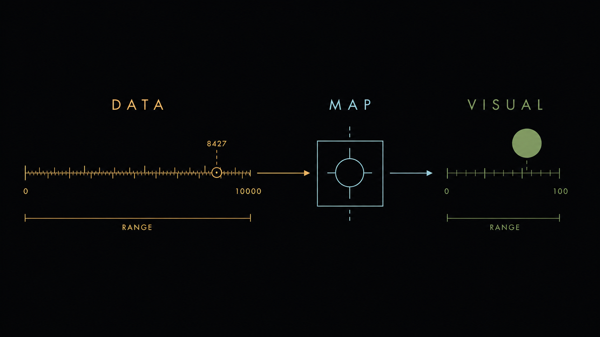
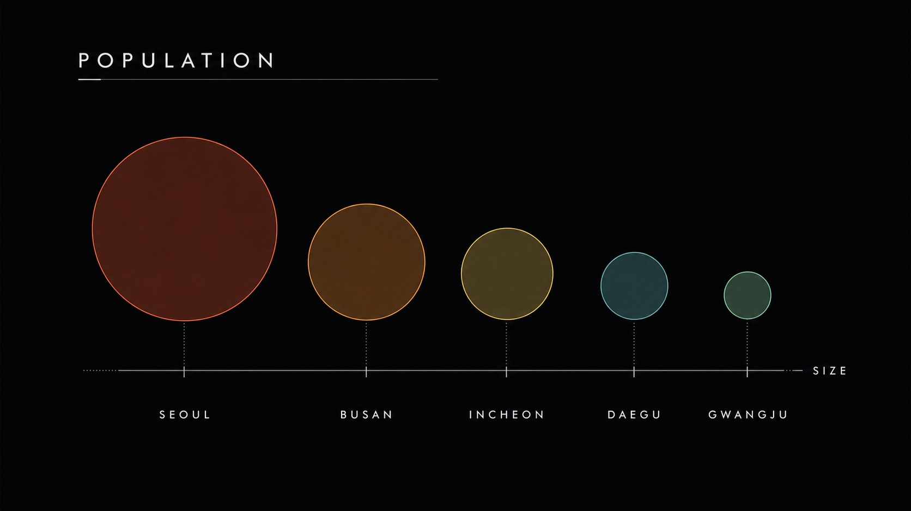
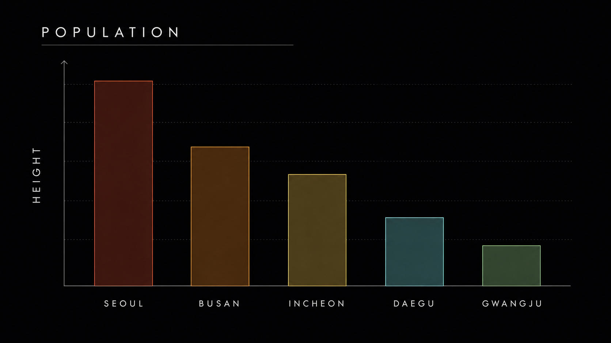
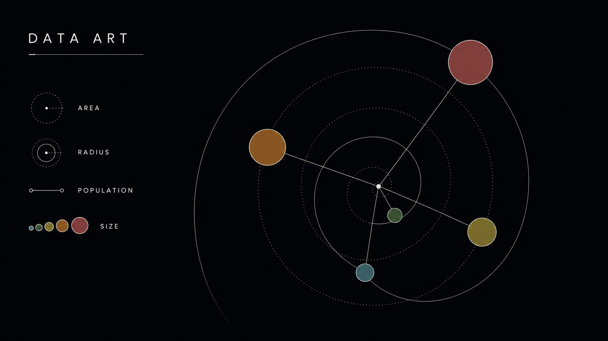
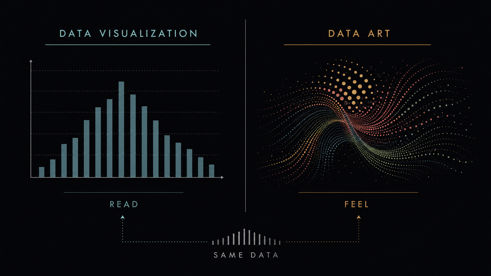
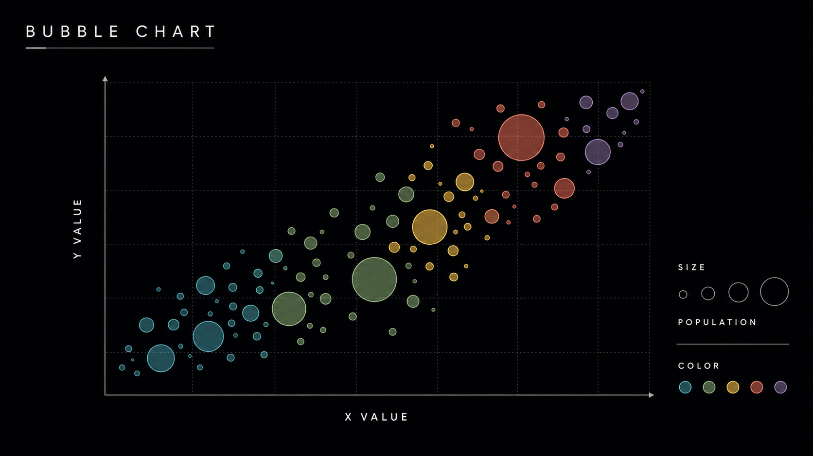
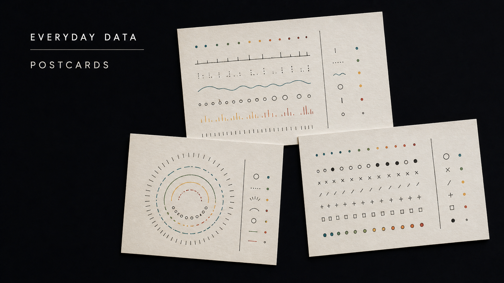
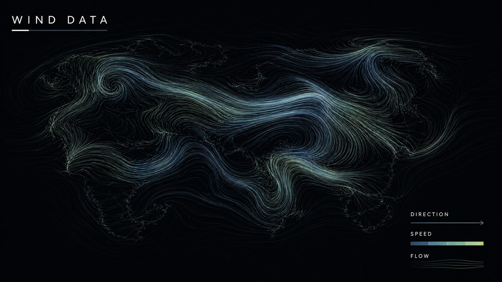
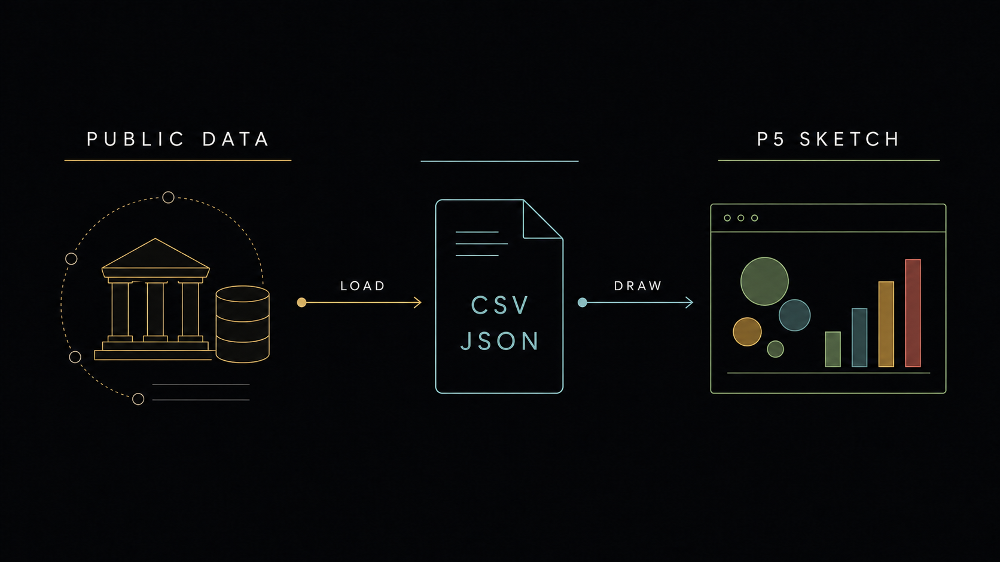

11주차 2교시 — 데이터를 시각으로 매핑하기
강의 아웃라인: week-11-outline 이전 교시: week-11-period1-student (preload, loadJSON, loadTable) 다음 교시: week-11-period3-student (학생 주도 실습)
| 항목 | 내용 |
|---|---|
| 대상 | P5.js 입문자 (테크아트 전공) |
| 소요 시간 | 45분 |
| 사전 준비 | 1교시에서 만든 data.json / data.csv |
-
map()으로 데이터 값을 시각 요소(위치·크기·색)에 매핑할 수 있습니다 - 막대 차트와 나선 배치로 같은 데이터의 두 표현을 만들 수 있습니다
- 데이터 시각화와 데이터 아트의 차이를 사례로 구분할 수 있습니다
1교시 복습
빠른 퀴즈 3문항
데이터 파일이 다 준비될 때까지 setup()을 기다리게 하는
함수는?
답: preload().
JSON에서 첫 번째 도시의 인구를 꺼내는 코드는?
답: cityData.cities[0].population.
CSV에서 숫자를 꺼낼 때 getString 대신 무엇을 써야
했나요?
답: getNum. 글자가 아니라 실제 숫자로
변환되니까.
1교시에서 2교시로
1교시에서는 데이터를 콘솔에 찍는 단계까지 진행했습니다. 콘솔에
'서울 — 9736027'이 찍히면 기본 동작이 성공한 것입니다. 2교시에서는 그
숫자를 화면 위의 이미지로 바꿔봅니다.
미디어아트 수업이므로, 숫자를 콘솔로 읽는 게 아니라 화면에서 보게 만드는 것이 목표입니다.
데이터의 숫자를 시각 요소로 번역하기. 그 번역기가 5주차에서 배운
map().
심화 개념
1 — map()으로 데이터를 시각 요소에 매핑하기
map() 복습
5주차에서 한 번 만났던 함수입니다.
map(value, start1, stop1, start2, stop2)한 범위의 숫자를 다른 범위로 환산하는 함수입니다.
5주차에선 mouseX(0~400)를 색상값(0~255)으로 바꿨습니다.
마우스를 오른쪽으로 보내면 색이 밝아지는 구조였습니다.
오늘 바뀌는 것은 입력값 하나뿐입니다. mouseX 대신
데이터의 숫자를 넣습니다.
데이터 매핑이 뭔지 한 표로
| 데이터 (원래 범위) | 시각 요소 (목표 범위) | map() 호출 |
|---|---|---|
| 인구 (0 ~ 10,000,000) | 원 크기 (20 ~ 150) | map(pop, 0, 10000000, 20, 150) |
| 면적 (500 ~ 1100) | x 위치 (50 ~ 450) | map(area, 500, 1100, 50, 450) |
| 인덱스 (0 ~ 4) | 색상 (파랑 → 빨강) | map(i, 0, 4, 100, 255) |

map은 숫자 번역기입니다. 그대로는
체감하기 어려운 9,736,027이라는 값을 화면 위의 원 크기로 바꿔주는
역할.
첫 번째 시각화 — 인구로 원 크기 결정
1교시에서 만든 data.json을 그대로 사용합니다. 이번엔
콘솔이 아니라 화면에 그립니다.
let cityData;
function preload() {
cityData = loadJSON("data.json");
}
function setup() {
createCanvas(500, 400);
background(240);
noLoop();
let cities = cityData.cities;
for (let i = 0; i < cities.length; i++) {
let city = cities[i];
let x = map(i, 0, cities.length - 1, 80, width - 80);
let y = height / 2;
let size = map(city.population, 0, 10000000, 20, 150);
let bright = map(city.population, 0, 10000000, 100, 255);
fill(bright, 100, 150, 200);
noStroke();
ellipse(x, y, size);
fill(0);
textAlign(CENTER);
textSize(12);
text(city.name, x, y + size / 2 + 18);
}
}구조는 1교시 for문 그대로입니다. let city = cities[i]로
i번째 도시를 받고, 안에서 map을 세 번 부르는
형태입니다.
핵심 줄을 짚어 봅니다.
x = map(i, 0, cities.length - 1, 80, width - 80)— 인덱스 → 가로 위치. 5개 도시가 화면에 균등 분포size = map(city.population, 0, 10000000, 20, 150)— 인구 → 원 크기. 서울은 거의 150, 광주는 40 근처bright = map(...)— 인구 → 빨강 성분. 인구가 많을수록 붉은빛이 강해짐noLoop()— 정적 시각화이므로draw()반복을 멈춤. 한 번만 그리고 끝
실행하면 5개 도시가 인구 크기에 따라 다른 원으로 일렬 배치됩니다. 서울이 압도적으로 큰 것이 한눈에 보입니다. 이것이 데이터 시각화의 가장 기본 형태입니다.

만약 size 범위를
map(city.population, 0, 100, 20, 150)처럼 잘못 적으면 모든
도시가 150을 훌쩍 넘어서 화면 밖으로 나갑니다. 원래
데이터의 실제 범위를 콘솔로 한번 확인하고 매핑 범위를 잡는
습관이 중요합니다.
원 크기를 인구가 아니라 면적으로 바꾸려면 어느 줄을 어떻게 고치면 될까요?
답:
map(city.population, 0, 10000000, ...) 자리를
map(city.area, 0, 1200, ...)으로. 데이터 키와 범위를 바꾸면
됩니다.
심화 개념 2 — CSV로 막대 차트 만들기
이번엔 CSV 데이터를 막대 그래프로 그립니다. 같은 데이터, 다른 표현입니다.
왜 막대 차트인가
원 크기로 표현하면 직관적이긴 하지만, 정확한 비교는 어렵습니다. ’서울이 광주의 몇 배인지’는 원 크기만으로 잘 잡히지 않습니다. 막대는 길이가 곧 수치라서 비교가 더 명확합니다.
코드 — 막대 차트 전체
let table;
function preload() {
table = loadTable("data.csv", "csv", "header");
}
function setup() {
createCanvas(500, 400);
background(240);
noLoop();
let rowCount = table.getRowCount();
let slot = width / (rowCount + 1);
for (let r = 0; r < rowCount; r++) {
let name = table.getString(r, "name");
let pop = table.getNum(r, "population");
let x = (r + 0.5) * slot;
let barHeight = map(pop, 0, 10000000, 0, height - 100);
let barWidth = slot * 0.6;
fill(70, 130, 180);
noStroke();
rect(x, height - 40 - barHeight, barWidth, barHeight);
fill(0);
textAlign(CENTER);
textSize(11);
text(name, x + barWidth / 2, height - 22);
textSize(9);
text(nf(pop, 0, 0), x + barWidth / 2, height - 48 - barHeight);
}
fill(0);
textSize(16);
textAlign(CENTER);
text("한국 주요 도시 인구", width / 2, 30);
}핵심 짚기
이전 코드와 비교해서 새로 들어온 것이 두 가지입니다.
(1) 슬롯 폭 계산.
let slot = width / (rowCount + 1)로 캔버스 가로를
6등분(=행 5개 + 여백 1)했습니다. 각 막대는 자기 슬롯의 60%만 차지하니까
사이 간격이 자동으로 생깁니다.
(2) nf() — 숫자 포맷팅.
nf(pop, 0, 0)은 숫자를 보기 좋게 출력하는 함수입니다.
9736027을 그대로 다루면 읽기 부담이 있는데, 소수점 없이
정수 형태로 깔끔하게 표시해줍니다. 세 자리 콤마는 아직 안 들어가지만,
데이터 시각화에서 자주 쓰는 유틸입니다.
막대 높이 계산도 다시 봅니다.
barHeight = map(pop, 0, 10000000, 0, height - 100). 인구
0이면 막대 길이 0, 1000만이면 height-100까지. 막대는 화면 아래(height -
40)에서 시작해서 위로 자랍니다. 그래서
rect(x, height - 40 - barHeight, ...)로 좌상단 좌표를
빼주는 것입니다.
실행하면 막대 5개가 도시 순서대로 나란히 그려집니다. 서울의 인구가 다른 도시보다 훨씬 크다는 점이 길이로 확연히 보입니다. 원 크기로는 잘 안 보였던 비교가 막대에서는 또렷해집니다.

P5.js는 좌상단이 (0,0)이라서 y가 커질수록 아래로 갑니다. 막대를
아래에서 위로 그리려면 y = height - 40 - barHeight처럼 빼야
합니다. 처음엔 거꾸로 그려져서 화면 위쪽에서 거꾸로 자라는 막대를 만나기
쉽습니다. 그럼 빼기 부호를 확인합니다.
같은 데이터를 인구가 아니라 면적으로 막대로 그리려면?
답: getNum(r, "population")을
getNum(r, "area")로 바꾸고, map의 입력 범위를
0, 1200처럼 면적 범위로 바꿉니다.
심화 개념 3 — 같은 데이터, 예술적으로 — 나선 배치
지금까지는 데이터를 정보 전달 목적으로 시각화했습니다. 이번엔 같은 데이터를 느낌으로 표현합니다. 막대 차트처럼 정확한 비교가 목적은 아니지만, 이미지의 인상이 더 강하게 남는 표현입니다.
아이디어 — 나선 위에 도시 배치
5개 도시를 가로로 줄 세우는 대신, 원형으로 둘러서 배치합니다. 9주차
sin()/cos() 기억나죠? 그때 원 위의 점 좌표를
구했었습니다.
x = centerX + cos(angle) * radius
y = centerY + sin(angle) * radius각 도시마다 angle을 다르게 주면 원 둘레에 점이 찍힙니다.
거기에 radius도 도시마다 다르게 주면, 원이 아니라
나선처럼 흩어집니다.
코드 — 나선 데이터 아트
let cityData;
function preload() {
cityData = loadJSON("data.json");
}
function setup() {
createCanvas(500, 500);
background(20);
noLoop();
colorMode(HSB, 360, 100, 100, 100);
let cities = cityData.cities;
let centerX = width / 2;
let centerY = height / 2;
for (let i = 0; i < cities.length; i++) {
let city = cities[i];
let angle = map(i, 0, cities.length, 0, TWO_PI);
let radius = map(city.area, 500, 1100, 60, 200);
let size = map(city.population, 0, 10000000, 20, 100);
let hue = map(i, 0, cities.length, 0, 360);
let x = centerX + cos(angle) * radius;
let y = centerY + sin(angle) * radius;
stroke(hue, 70, 90, 40);
strokeWeight(1);
line(centerX, centerY, x, y);
noStroke();
fill(hue, 70, 90, 60);
ellipse(x, y, size);
}
}핵심 짚기
한 줄 한 줄 매핑이 데이터에서 시각으로 어떻게 번역되는지 봅니다.
| 줄 | 매핑 의미 |
|---|---|
angle = map(i, 0, cities.length, 0, TWO_PI) |
인덱스 → 원 둘레의 각도. 5개 도시가 360°에 균등 분포 |
radius = map(city.area, 500, 1100, 60, 200) |
면적 → 중심에서의 거리. 면적 클수록 중심에서 멀어짐 |
size = map(city.population, 0, 10000000, 20, 100) |
인구 → 원 크기 |
hue = map(i, 0, cities.length, 0, 360) |
인덱스 → 색조. 5개 도시에 색의 무지개를 입힘 |
colorMode(HSB, 360, 100, 100, 100) —
색상을 RGB가 아니라 HSB(색조·채도·명도)로 다루겠다고 선언하는 줄입니다.
hue를 각도(0~360)로 직접 다룰 수 있어서 무지개 그라데이션이
쉽습니다.
중심에서 점까지 선 그리기 —
line(centerX, centerY, x, y). 데이터가 중심에서 뻗어나가는
줄기처럼 보이게 해주는 시각 장치입니다.
실행하면 어두운 배경 위에 다섯 색의 원이 나선처럼 흩어지고, 중심에서 가는 선이 뻗어 나옵니다. 같은 인구 데이터인데, 막대 차트와는 완전히 다른 인상입니다. 정확한 비교는 어렵지만, 보고 있으면 ’서울이 무겁고 색이 강하다’는 느낌이 남습니다. 이것이 데이터 아트에 가까운 표현입니다.

읽히게 만들면 시각화, 느끼게 만들면 아트. 같은 데이터로 다른 답을 내는 두 가지 태도.

기본 컬러 모드는 RGB(0~255)입니다. 거기에
fill(360, 70, 90)처럼 hue를 넣으면 색이 엉뚱하게 나옵니다.
HSB로 hue를 다룰 거면 setup()에서
colorMode(HSB, ...)를 반드시 먼저 호출.
이 코드를 막대 차트 코드와 비교했을 때, 데이터를 꺼내는 부분(for문 + map)은 다른가요, 같은가요?
답: 거의 같습니다. for문 돌고,
city.population/city.area를
map으로 환산하는 패턴이 똑같습니다. 다른 건 좌표 계산
방식뿐.
실전 사례 분석
직접 그린 다섯 도시짜리 작은 사례를 넘어, 실제 작가들이 현실 데이터로 만든 작품을 둘러봅니다.
사례 1 — Gapminder (한스 로슬링) — 데이터 시각화
스웨덴 통계학자 한스 로슬링의 작업입니다. 국가별 소득(x축) vs 기대수명(y축), 인구(원 크기), 대륙(색)을 한 화면에 담은 버블 차트.
오늘 직접 한 일이 4번 반복되는 구조입니다.
map(소득, ...), map(수명, ...),
map(인구, ...), 그리고 색은 카테고리 매핑. 거기에 연도
슬라이더가 붙어서 ’시간에 따라 어떻게 변하는가’까지 보여줍니다.

TED 강연을 한 번 찾아보세요. 데이터 시각화로 청중을 울리는 것이 가능하다는 것을 보여주는 강연입니다.
사례 2 — Dear Data (조지아 루피·스테파니 포사베츠) — 데이터 아트
1교시 도입에서 한 번 만났던 작품입니다. 두 디자이너가 1년 동안 매주 일상 데이터를 수집해서 엽서로 손그림 그려 보냈습니다. ‘이번 주 칭찬 받은 횟수’, ‘거울 본 횟수’, ‘문 손잡이 잡은 횟수’ 같은 것.
여기서 데이터는 도시 인구처럼 큰 숫자가 아닙니다. 굉장히 사소한 일상입니다. 그런데 그것이 색·기호·패턴으로 변환되면 한 사람의 한 주가 한 장의 그림이 됩니다.

데이터의 종류가 작품의 종류를 정한다.
참고도서 데이터 도상학 (2017)을 한 번 펼쳐보면 좋습니다. ’데이터를 어떤 시각 기호로 변환할 것인가’라는 질문을 본격적으로 다루는 책입니다.
사례 3 — Wind Map (Fernanda Viégas & Martin Wattenberg) — 인터랙티브 데이터 아트
미국 전역의 실시간 바람 데이터를 흐름선으로 시각화한 작품입니다. 화면에서 끊임없이 선들이 움직이는데, 그 움직임 하나하나가 실제 측정된 풍속·풍향입니다.

오늘 배운 loadJSON + map +
draw() 애니메이션을 합치면 이런 작품의
기초를 만들 수 있습니다. 3교시 확장 활동에 비슷한
방향이 있으니, 흥미 있으면 거기서 시도해보세요.
사례 4 — Coding Train 데이터 시각화
학습용 사례입니다. Daniel Shiffman의 Coding Train 채널에 P5.js로 데이터를 시각화하는 영상이 잔뜩 있습니다. 오늘 배운 것을 더 확장하고 싶으면 거기서 한두 개 따라해보면 좋습니다. 링크는 참고자료에 정리되어 있습니다.
데이터를 어디서 구하나 — 공공 데이터 포털
실습이나 기말 프로젝트에서 자기 관심사의 데이터를 쓰고 싶다면 두 군데를 기억해주세요.
| 사이트 | 어떤 데이터 |
|---|---|
| 공공데이터포털 | 국가 단위 공공 데이터 (교통·환경·복지 등) — CSV/JSON 다운로드 |
| 서울 열린 데이터 광장 | 서울시 데이터 — 따릉이, 미세먼지, 인구 이동 등 |

관심 주제 검색 → CSV 다운로드 → 오늘 만든 코드에 파일명만 바꿔서 넣으면 바로 시각화 시작입니다. 수업 활동이나 기말 프로젝트에서 자기 데이터를 쓰고 싶을 때 첫 번째로 들를 곳.
3교시 실습 안내
실습 활동 한 줄 소개
3교시는 학생 주도 실습입니다. 도시 인구 JSON 데이터를 가지고 각자 한 점의 작품을 완성합니다.
기본 트랙 — 전원 공통
방향은 자유입니다. 막대 차트처럼 명확하게 보여줘도, 나선처럼 예술적으로 표현해도 모두 OK. 단, 다음 파이프라인은 모두 거쳐야 합니다.
preload → loadJSON → for문 순회 → map() 매핑 → 시각 요소 그리기기본 트랙 완료 기준은 4가지입니다.
-
preload()에서data.json을 로드한다 - for문으로 5개 도시를 순회한다
-
map()으로 데이터를 시각 속성에 매핑한다 - 최소 2개 이상의 시각 속성(위치·크기·색상 등)이 데이터에 의해 결정된다
선택 확장 활동 — 기본 트랙 완료 후
다 끝낸 사람은 같은 파이프라인을 변주해봅니다. 하나만 골라도 좋고, 여러 개 시도해도 좋습니다.
| 확장 활동 | 무엇을 할까 |
|---|---|
| (a) 데이터 아트 변주 | 막대 → 나선으로 표현 방식 바꾸기. 2교시 나선 코드 참고 |
| (b) 기온 데이터로 교체 | 월별 평균기온 CSV를 loadTable로 불러와 차트 만들기 →
getNum 사용 연습 |
| (c) 자기 데이터 가져오기 | 공공데이터포털·서울 열린 데이터 광장에서 관심 주제 CSV 다운로드 → 본인 파이프라인에 연결 |
| (d) 실시간 애니메이션 | noLoop() 제거하고 draw() 반복 살려서,
인구가 많은 도시일수록 빠르게 진동하게 |
첫 번째 힌트
막막하면 다음 순서로 시작합니다.
- P5.js Web Editor에서 새 스케치 열기
- 1교시에 만든
data.json을 그대로 새 스케치로 복사 preload와for문골격까지만 먼저 작성 → 실행해서 콘솔에 도시 이름 5개 찍히는지 확인- 그 다음에 시각 요소 그리기 시작
그림보다 데이터 흐름이 먼저입니다. 데이터를 콘솔로 확인하는 단계를 건너뛰면 나중에 어디서 문제가 생긴 건지 찾기 힘듭니다.